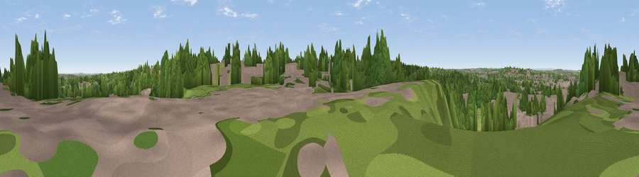

Viewpoint near Mansfield
#36951 in England · top 65% of its area beats it · near MansfieldWhere it is
The exact computed spot (SK 54575 59625). Click the marker for map links.
The view, rendered

A 360° render of this exact spot computed from the terrain model, tree cover and land cover — summer colours, afternoon light, calibrated against photographs of famous viewpoints. Real trees, hedges and buildings will differ in detail.
The panorama
Grey silhouette: terrain skyline in each direction (720 bearings, Earth curvature and refraction included). Dashed green: skyline with trees (+15 m) and buildings (+8 m) as obstacles. Blue strip: how far the ground is visible on each bearing.
Where the view opens
Wedge length = distance to the farthest visible ground on that bearing (vegetation-aware). Rings at 10, 25 and 50 km.
What fills the view
37% woodland · 37% built-up · 24% grassland · 2% cropland
Angular shares of the visible panorama (visual magnitude), not map area. Landscape diversity 0.51 (0–1 Shannon).
Key numbers
More beautiful places nearby
The staircase of upgrades: each row has a higher view potential than everything closer. Driving times are estimates from straight-line distance, calibrated against real road routing — check an actual route before setting out.
| Place | Direction | Drive | Score |
|---|---|---|---|
| Viewpoint near Mansfield | N · 0 km | ~1 min | 38.0 |
| Viewpoint near Clipstone | ENE · 3 km | ~8 min | 41.3 |
| Viewpoint near Blidworth | SE · 6 km | ~12 min | 42.6 |
| Viewpoint near Blidworth | SE · 6 km | ~14 min | 46.1 |
| Viewpoint near Newstead | SSW · 9 km | ~17 min | 53.4 |
| Viewpoint near Stainsby | WNW · 10 km | ~19 min | 53.9 |
| Viewpoint near Meden Vale | NNE · 11 km | ~21 min | 65.2 |
| Burstheart Hill [Thoresby Colliery] | NE · 12 km | ~23 min | 69.3 |
53.13100, -1.18579 · source: screening · position refined by local search. Computed location — check access rights before visiting.